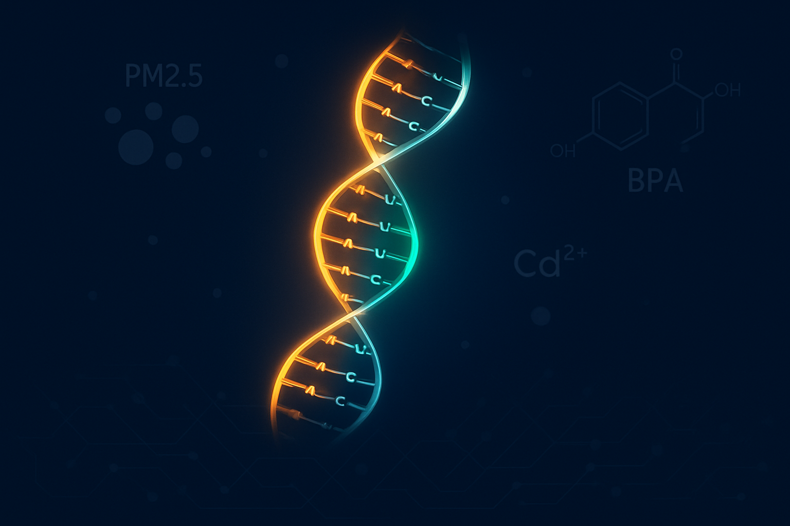
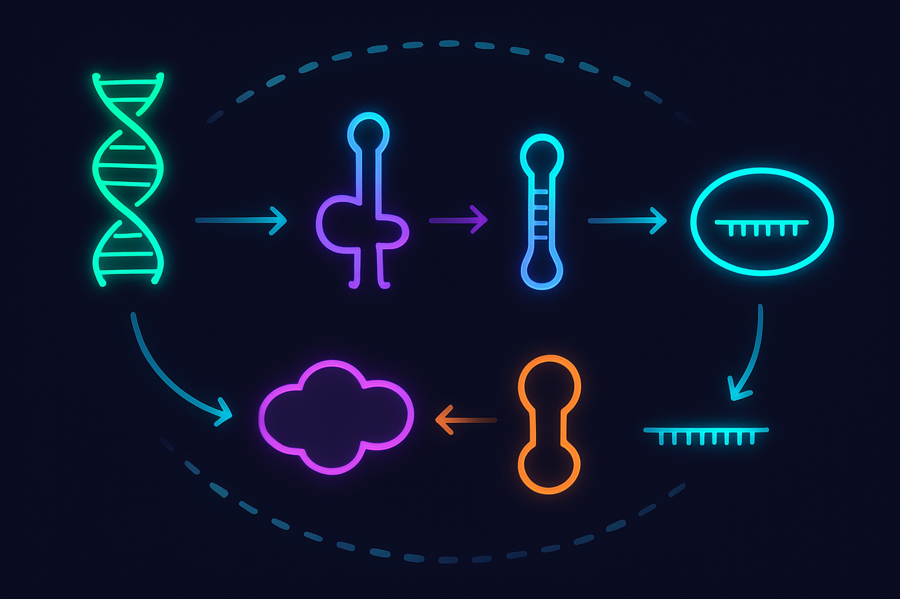
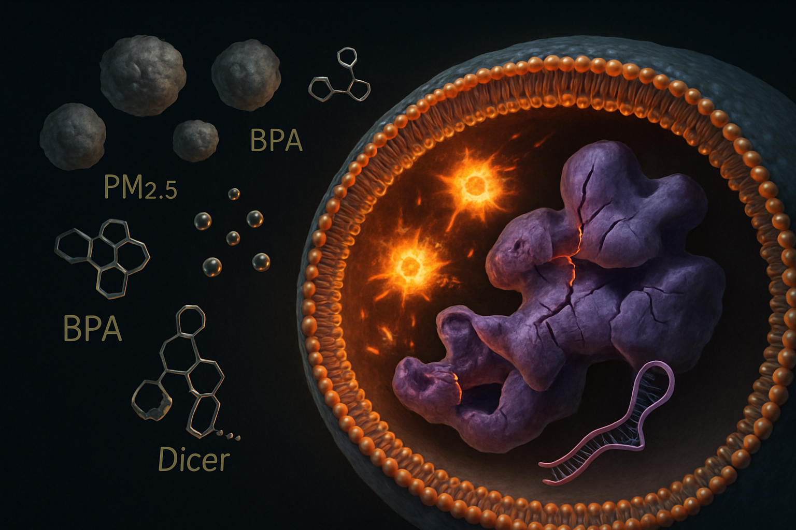
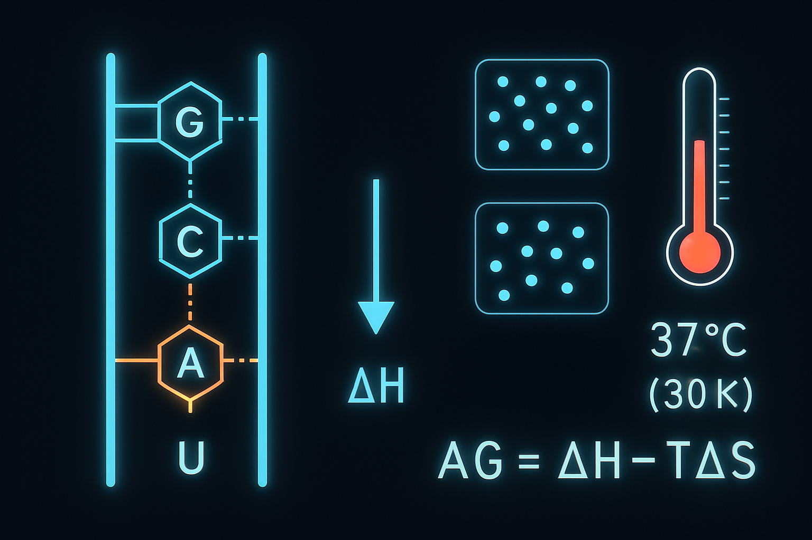
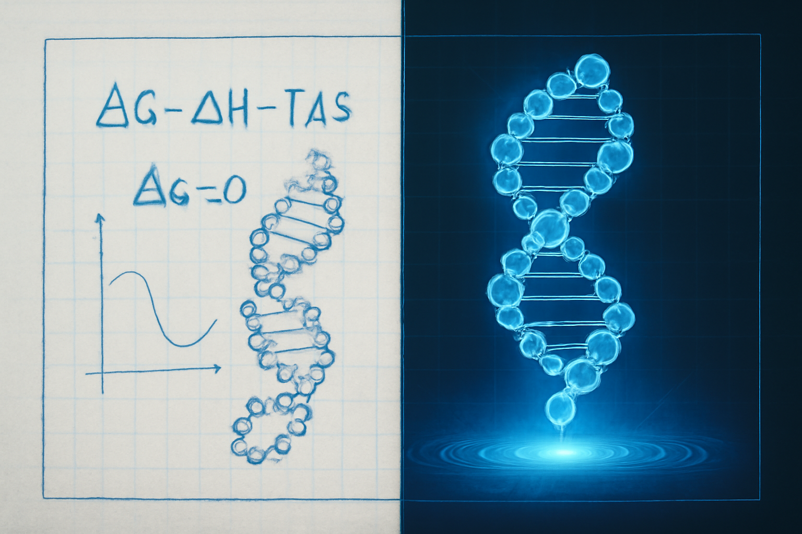
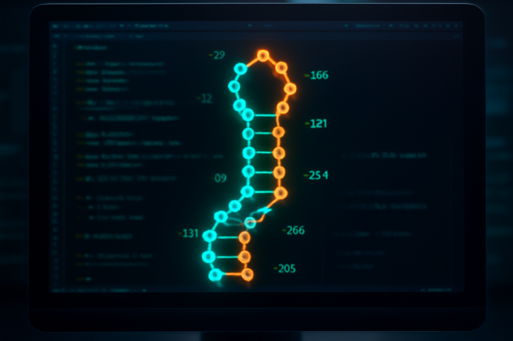
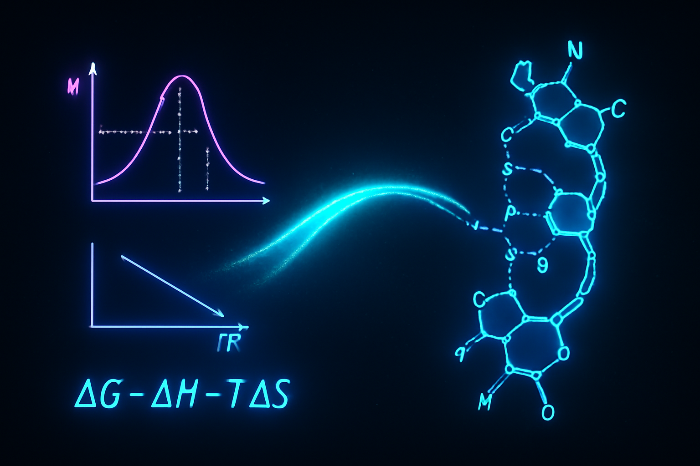

— 결합 엔탈피, 자유에너지(ΔG), 그리고 분자 인식의 화학으로 —
도서 《꿈의 분자 RNA》(김우재, 김영사, 2023) 연계
안녕하세요, 30131번 최태서입니다.
오늘 발표할 주제는 "환경 유해 물질에 의한 miRNA 변동의 열역학적 분석과
AI 기반 조기 진단 시스템"입니다.
쉽게 말하면 이겁니다.
미세먼지나 중금속 같은 환경 오염 물질이
우리 몸속 아주 작은 RNA를 망가뜨리는데,
그 과정을 화학 시간에 배운 엔탈피랑 깁스 자유에너지로 설명할 수 있고,
이걸 AI로 분석하면 암을 10년 전에 미리 예측할 수도 있다 — 그런 이야기입니다.
커피 항산화 실험 · 카탈레이스 효소 반응 속도 측정
→ "pH가 바뀌면 효소가 왜 안 될까?" — 첫 번째 궁금증
화학Ⅰ에서 엔탈피 학습 · 확률과통계에서 PM2.5 정규분포 직접 계산
고급생명과학에서 단백질 구조 AI 예측 (RMSD 값 직접 산출)
환경호르몬(BPA, TBT)의 분자적 위험성 조사
"환경호르몬 바이오센서"를 미래 연구 주제로 설정
《꿈의 분자 RNA》 독서 → 모든 퍼즐 조각이 맞춰짐!
miRNA라는 "미세 조절자" 발견 → 화학·환경·AI·통계가 하나로 수렴
환경 유해 물질(PM2.5, Cd²⁺, BPA)은 어떤 화학적 경로를 거쳐
miRNA의 발현과 결합 안정성을 변화시키며,
이를 ΔH·ΔG·Ea 등 열역학 변수로 정량화하여
AI 기반 조기 진단 시스템을 논리적으로 설계할 수 있는가?
• 환경 독소: PM2.5, 카드뮴(Cd²⁺), BPA
• 대표 miRNA: miR-21(종양촉진) / let-7(암억제)
• 방법: 개념적 설계(Conceptual Design)
• 도서 《꿈의 분자 RNA》 핵심 개념 재해석
• 2024~2025년 최신 리뷰 논문 분석
• AI 기반 진단 시스템의 논리적 구조 제시
이 탐구는 갑자기 나온 아이디어가 아닙니다.
고등학교 3년 동안 해왔던 활동들이 하나의 지점에서 만난 겁니다.
1학년 때 카탈레이스 효소가 pH에 따라 확 달라지는 걸 봤어요.
"환경이 바뀌면 왜 효소가 안 되지?" — 이게 시작이었습니다.
2학년 때 화학Ⅰ에서 엔탈피를 배우면서
"결합의 세기가 곧 에너지"라는 걸 알았고,
확률과 통계에서는 PM2.5 정규분포를 직접 계산했습니다.
그리고 3학년,
《꿈의 분자 RNA》를 읽었는데 — 이 책이 모든 퍼즐을 맞춰줬습니다.
흩어져 있던 화학, 환경, AI, 통계가 전부
"miRNA를 매개로 한 환경성 질환 조기 진단"이라는
하나의 주제로 수렴됐어요.

약 20~24개 염기로 된 짧은 비암호화 RNA.
유전자 발현을 조절하는 "미세 스위치" 역할
DNA → pri-miRNA → pre-miRNA
→ 성숙 miRNA → RISC 복합체 결합
→ 표적 mRNA 분해 또는 번역 억제
miRNA의 2~8번 위치 염기가 표적을 결정.
상보적 수소결합으로 결합 특이성 좌우
A-U 쌍: 수소결합 2개
G-C 쌍: 수소결합 3개
G-C 함량↑ = 결합 엔탈피↑ = 더 안정
화학2 교과 연결:
"분자 인식" = 입체 구조의 상보성 + 수소결합의 엔탈피.
효소-기질 결합, 항원-항체 반응과 같은 원리가 miRNA에도 그대로 적용됩니다.
miRNA는 약 20~24개 염기로 된 아주 짧은 RNA예요.
유전정보를 담고 있지는 않지만,
유전자 발현을 조절하는 "미세 스위치" 역할을 합니다.
작동 과정을 보면, DNA에서 만들어진 후 Drosha 효소가 1차 가공,
Dicer 효소가 2차 가공을 해서 성숙 miRNA가 됩니다.
이 miRNA가 RISC 복합체를 만들고,
표적 mRNA에 달라붙어서 분해하거나 번역을 막습니다.
여기서 화학2 연결이 중요합니다.
miRNA가 mRNA에 결합할 때 핵심은 염기 사이의 수소결합이에요.
A-U 쌍은 수소결합 2개, G-C 쌍은 3개.
G-C가 많을수록 결합 엔탈피가 커지고, 더 안정하게 달라붙습니다.

PM2.5 미세먼지, 카드뮴 이온(Cd²⁺), BPA 등이 세포막을 투과하여 유입.
막 투과, 수용체 결합, 금속 이온의 리간드 교환 반응 등으로 침투합니다.
산화-환원 반응으로 활성산소(ROS)가 과다 생성됩니다.
미토콘드리아 전자전달계가 교란 → 산화 스트레스 발생.
화학Ⅰ에서 배운 산화-환원이 여기서 그대로 적용!
NF-κB, p53, NRF2 등 전사인자가 활성화되면서
miRNA 유전자의 전사량 자체가 변동합니다.
ROS가 Dicer 효소의 시스테인 잔기(-SH)를 산화시킵니다.
-SH → 이황화 결합(-S-S-)으로 변환
→ 효소 입체구조 변형 → pre-miRNA 절단 효율 저하.
1학년 때 카탈레이스가 pH에 따라 변했던 것과 정확히 같은 원리!
호흡기·심혈관 조직에서
miR-21 ↑, let-7 ↓
→ 염증·증식 관련 mRNA 재편
신장·간 조직에서
miR-34a 발현 변화
→ p53 매개 세포자살 경로 교란
내분비 관련 조직에서
Dicer 활성 전반적 저하
→ 광범위한 miRNA 풀(pool) 변화
환경 독소가 miRNA를 바꾸는 과정은 4단계입니다.
1단계 — PM2.5, 카드뮴, BPA가 세포 안으로 들어옵니다.
2단계 — 세포 안에서 활성산소(ROS)가 과다 생성됩니다.
이건 산화-환원 반응이에요.
3단계 — 전사인자가 활성화되면서 miRNA 전사량이 바뀝니다.
4단계가 핵심인데요, ROS가 Dicer 효소의 시스테인을 산화시켜서
이황화 결합(-S-S-)이 만들어지고,
효소 입체구조가 변형되어 절단 효율이 떨어집니다.
1학년 때 카탈레이스가 pH에 따라 활성이 변했던 것과 정확히 같은 원리입니다.

A-U 쌍: −15 kJ/mol (수소결합 2개)
G-C 쌍: −25 kJ/mol (수소결합 3개)
씨드 영역 7개 염기 중 G-C 4개, A-U 3개라면
|ΔH| ≈ (4×3 + 3×2) × 20 ≈ 360 kJ/mol
매우 강한 결합!
두 RNA 가닥이 결합하면 자유도가 줄어듦
→ ΔS < 0 (엔트로피적으로 불리)
결합의 자발성은 엔탈피와 엔트로피의 균형으로 결정되며,
이 균형이 깁스 자유에너지 식에 반영됩니다.
체온 310K(37°C)에서
miRNA-mRNA 결합의 ΔG가 음의 값이면
→ 자발적으로 결합이 일어남
ΔG ≈ −81 kJ/mol → 확실히 자발적!
온도 상승(발열·염증): TΔS↑ → ΔG 덜 음 → 결합 불안정
pH 변화: 수소결합 형성 능력 변화 → ΔH 변화
중금속(Cd²⁺): RNA 인산기에 결합 → 2차 구조 붕괴
활성화 에너지(Ea): 효소 변형 → Ea↑ → 반응속도↓
★ 핵심 차별점:
환경 독소의 영향은 막연한 "독성"이 아니라,
ΔH의 감소, ΔS의 변화, Ea의 증가라는
정량적 열역학·반응속도론 변수로 분해할 수 있습니다.
이것이 본 탐구가 "단순 농도 입력"이 아닌 "열역학적 변수 입력" AI를 제안하는 근거입니다.
이 슬라이드가 본 탐구의 가장 핵심입니다.
G-C 쌍은 수소결합 3개로 약 −25 kJ/mol,
A-U 쌍은 2개로 약 −15 kJ/mol.
씨드 영역 7개 염기로 계산하면 총 결합 엔탈피는 약 360 kJ/mol입니다.
화학2에서 배운 ΔG = ΔH − TΔS.
체온 310K에서 ΔG가 음의 값이면 자발적 결합입니다.
그런데 환경 스트레스가 이걸 바꿉니다.
온도가 올라가면 TΔS가 커져서 결합이 불안정해지고,
중금속이 RNA 인산기에 붙으면 구조 자체가 무너집니다.
핵심 메시지:
환경 독소의 영향은 "독성"이 아니라
ΔH의 감소, ΔS의 변화, Ea의 증가라는 정량적 변수로 분해할 수 있다는 겁니다.
miR-21이 대표적
→ PTEN, PDCD4 등 암 억제 유전자의 mRNA를 분해
→ 종양 증식·침윤 촉진
쉽게 말하면: "브레이크를 밟는 유전자"를 꺼버리는 것
let-7 계열이 대표적
→ RAS, MYC 등 암유전자의 억제가 풀림
→ 암유전자 폭주
쉽게 말하면: "엑셀러레이터를 밟는 유전자"가 폭주
① 증식 신호 폭주 ② 세포자살(apoptosis) 회피 ③ DNA 손상 반응 실패
→ 고급생명과학: "종양 미세환경에서의 유전자 발현 패턴 제어"와 정확히 일치합니다.
miRNA가 바뀌면 두 가지 방향의 불균형이 동시에 일어납니다.
첫째, oncomiR(miR-21)이 증가합니다.
암 억제 유전자의 mRNA를 분해해버려요.
쉽게 말하면 "브레이크를 밟는 유전자"를 꺼버리는 겁니다.
둘째, 암 억제 miRNA(let-7)가 감소합니다.
암유전자가 억제 없이 폭주해요.
"엑셀러레이터를 밟는 유전자"가 마음대로 달리는 거예요.
이 "이중 불균형" — 브레이크 고장 + 엑셀러레이터 폭주 —
이 상태가 되면 암의 표현형으로 진행합니다.
miRNA는 엑소좀(Exosome)이라는
인지질 이중층 소포에 담겨 보호됩니다.
혈액, 소변, 타액에 존재하며
RNase로부터 보호 → 체액에서 안정적 검출 가능
RT-qPCR: 역전사 + 실시간 정량 PCR
디지털 PCR: 단일 분자 수준 정밀 측정
NGS: 차세대 염기서열 분석
→ 펨토몰(10⁻¹⁵ mol) 수준 검출 가능
• PM2.5 노출 ↔ 혈중 miR-21 양의 상관관계
• 흡연 ↔ let-7 감소 상관관계
• 확률과통계에서 직접 PM2.5 정규분포 분석한 경험과 연결
→ 통계적 연결 가능
여기까지가 "현존하는 과학(Real-world Science)"입니다.
다음 슬라이드부터는 이 검증된 부품들을 조립하여 만든
"논리적 제안(Conceptual Design)"입니다.
여기서 이런 질문이 나올 겁니다.
"그거 좋은데, 실제로 측정이 되긴 하는 거야?"
대답은 "네, 됩니다."
miRNA는 엑소좀에 담겨 혈액, 소변에 돌아다니고,
RT-qPCR로 펨토몰 수준까지 검출 가능하며,
PM2.5와 miR-21의 상관관계는 이미 논문으로 검증됐습니다.
여기까지가 "현존하는 과학"이에요.
다음 슬라이드부터가 제가 이 부품들을 조립한 "논리적 제안"입니다.
독소별 miRNA 변화 패턴을 데이터베이스화합니다.
예: "PM2.5 노출 = miR-21 ↑ + let-7 ↓ + miR-34a ↑"
→ 독소마다 고유한 "분자 지문(molecular fingerprint)"을 만듭니다.
Lasso Regression: 2,000종 miRNA 중 핵심 20~30개를 자동 선별 (feature selection)
Random Forest: 비선형 의존 관계를 결정 트리 앙상블로 학습
다변수 회귀: 여러 miRNA 농도 조합 → "환경 노출량" 역추적
개인의 baseline miRNA 패턴을 기록해놓고,
Anomaly Detection 알고리즘으로 통계적 이탈이 감지되면
발병 가능성을 조기에 경고합니다.
★ 본 탐구의 차별점:
단순한 "miRNA 농도" 입력이 아니라,
ΔH, ΔG, Ea 등 "열역학적 변수"를 함께 입력합니다.
이것이 "데이터 통계"와 "분자 화학적 근거"를 연결하는 본 탐구만의 접근입니다.
제가 제안하는 시스템은 3단계입니다.
1단계 — 독소별 miRNA 변화 패턴을 DB로 만드는 "환경 지문" 구축.
2단계 — Lasso로 핵심 miRNA를 골라내고, Random Forest로 비선형 관계를 학습.
3단계 — Anomaly Detection으로 baseline 대비 이탈 감지 → "10년 전 조기 경보".
차별점:
단순히 농도만 넣는 게 아니라
결합 엔탈피 ΔH, 깁스 자유에너지 ΔG, 활성화 에너지 Ea까지
함께 입력합니다. 이게 "데이터 통계"와 "분자 화학적 근거"를 연결하는 부분이에요.
개인마다 기저 miRNA 농도가 다릅니다.
환경 노출 때문인지 원래 그런 건지 구분하려면
수만 명 규모의 종단적 연구가 필요합니다.
자연스러운 노화 변동과 환경 독소 변동이 겹칩니다.
연령, 식습관, 흡연 여부 등
교란 변수(confounding variables)를 통제해야 합니다.
같은 miRNA라도 조직·암종에 따라 역할이 반대일 수 있습니다.
종양 촉진 역할을 하는 곳도, 억제하는 곳도 있어요.
→ 조직 특이적 진단 모델이 필요합니다.
환경 스트레스에 대한 miRNA 변화가
"질병의 전조"인지 "적응 반응"인지 어떻게 구분할까요?
→ 시스템의 임계값(threshold) 설정에 본질적 함의
이 한계들을 인정하되,
한계를 솔직히 제시하는 것 자체가 본 탐구의 학문적 엄밀성을 보여줍니다.
"한계를 아는 것이 곧 학문적 성숙의 시작이다."
어떤 탐구든 한계를 솔직히 말하는 게 중요합니다.
첫째, 사람마다 기저 miRNA 농도가 달라서 Baseline 설정이 어렵습니다.
둘째, 노화 변동과 독소 변동을 구분하기 어렵습니다.
셋째, 같은 miRNA도 조직에 따라 역할이 반대라서 맥락 의존성 문제가 있습니다.
넷째, miRNA 변화가 "질병의 전조"인지 "적응 반응"인지라는 철학적 질문도 있어요.
이 한계들이 약점처럼 보일 수 있지만,
한계를 인정하는 것 자체가 학문적 엄밀성을 보여준다고 생각합니다.
miRNA = 화학의 언어로 설명 가능한 "미세 조절자"
수소결합 · 결합 엔탈피 · 깁스 자유에너지 · 분자 인식
= 화학2 핵심 개념이 그대로 적용됩니다.
환경 독소 → miRNA 교란 = ΔH·ΔG·Ea로 분해 가능
ROS 생성 → 전사인자 변화 → 가공 효소 산화
→ miRNA 발현 변화. 전부 정량화할 수 있습니다.
AI는 "도구"이며, 학문적 깊이만큼만 강력해진다
농도만 넣는 AI vs 열역학 변수까지 넣는 AI
→ 본질적으로 다른 모델입니다.
RNA는 생명과 환경 사이에 위치한 "완충지대"이자 "센서"다.
환경 독소가 miRNA의 수소결합과 결합 자유에너지를 흔들어
유전자 조절망을 붕괴시킨다면,
우리는 이를 역으로 이용해 질병의 조기 신호로 활용할 수 있을 것이다.
— 감사합니다. 질문 받겠습니다.
세 가지 결론입니다.
첫째, miRNA는 화학의 언어로 설명 가능합니다.
화학2에서 배운 개념이 그대로 적용돼요.
둘째, 환경 독소의 영향은
ΔH·ΔG·Ea라는 정량적 변수로 분해할 수 있습니다.
셋째, AI는 "도구"이며, 학문적 깊이만큼만 강력해집니다.
이 탐구를 하면서 가장 크게 느낀 건,
화학, 생명과학, 수학, AI가 하나로 융합되는 시대에
우리가 살고 있다는 겁니다.
그리고 그 융합의 한가운데에 miRNA가 있다는 사실이
저를 환경생명공학자의 꿈으로 이끌었습니다.
감사합니다. 질문 받겠습니다.
발표 후 예상되는 질문과 준비된 답변입니다.
좋은 질문입니다. 이 탐구는 '개념적 설계(Conceptual Design)' 보고서입니다.
실험 대신 문헌 해석, 최신 논문 리뷰, 시스템의 논리 구조 설계를 수행했습니다.
실제 공학에서도 실험 전에 반드시 개념 설계 단계를 거칩니다.
비행기를 만들기 전에 설계도를 먼저 그리는 것처럼요.
한계를 인정하되, 논리적 타당성에 집중한 탐구입니다.
후속 탐구에서 ViennaRNA 시뮬레이션이나 TCGA 데이터 분석으로
실제 검증을 진행할 계획입니다.

네, 가능합니다! ViennaRNA라는 프로그램이 있어요.
miRNA-mRNA 결합의 ΔG를 실제로 계산해주는 생물정보학 도구입니다.
RNA 서열을 입력하면 2차 구조를 예측하고,
결합 자유에너지를 kJ/mol 단위로 정확히 산출합니다.
이번 탐구에서는 원리와 의미를 이해하는 데 집중했고,
후속 탐구에서 직접 ViennaRNA를 돌려서
특정 환경 독소가 ΔG를 얼마나 변화시키는지 정량적으로 예측해볼 예정입니다.

지금 당장 완벽하게는 어렵습니다. 하지만 기반 기술은 이미 존재합니다.
TCGA(The Cancer Genome Atlas)와 GEO(Gene Expression Omnibus)라는
공개 데이터베이스에 수만 명의 miRNA 발현 데이터가 저장되어 있어요.
이미 Lasso와 Random Forest로 패턴을 학습하는 연구가 진행 중입니다.
제 탐구의 차별점은 여기에 '열역학 변수'를 추가하자는 제안입니다.
단순히 "miR-21이 몇 배 증가했다"가 아니라,
"결합 ΔG가 몇 kJ/mol 변했다"를 함께 입력하면
AI 모델의 생물학적 근거가 훨씬 단단해집니다.
이 탐구에 적용된 화학 개념을 정리하면:
• 결합 엔탈피(ΔH): 수소결합의 에너지, A-U vs G-C의 차이
• 깁스 자유에너지(ΔG = ΔH − TΔS): 결합의 자발성 판단 기준
• 엔트로피(ΔS): 두 분자 결합 시 자유도 감소
• 활성화 에너지(Ea): 효소 반응의 에너지 장벽
• 아레니우스 식(k = A·exp(−Ea/RT)): 반응 속도와 온도의 관계
• 산화-환원 반응: ROS 생성, 시스테인 산화
전부 화학Ⅰ·Ⅱ에서 배운 개념이
miRNA 분자 수준에서 그대로 작동한다는 걸 보여드린 겁니다.
화학이 교과서 안에만 있는 게 아니라
살아 있는 세포 안에서 매 순간 작동하고 있어요.

환경 오염 물질이 인체에 미치는 영향을
분자 수준에서 분석하고,
이를 AI와 바이오센서로 연결해서
조기 진단 시스템을 만드는 연구를 하고 싶습니다.
구체적으로는:
• 환경 독소 → miRNA 변화의 정량적 관계 규명
• 액체 생검 기반 바이오센서 개발
• AI 모델로 환경성 질환 조기 경보 시스템 설계
이번 탐구가 그 첫 번째 청사진이에요.
대학에서 화학공학이나 바이오공학을 전공하면서
이 청사진을 실제 연구로 발전시키고 싶습니다.